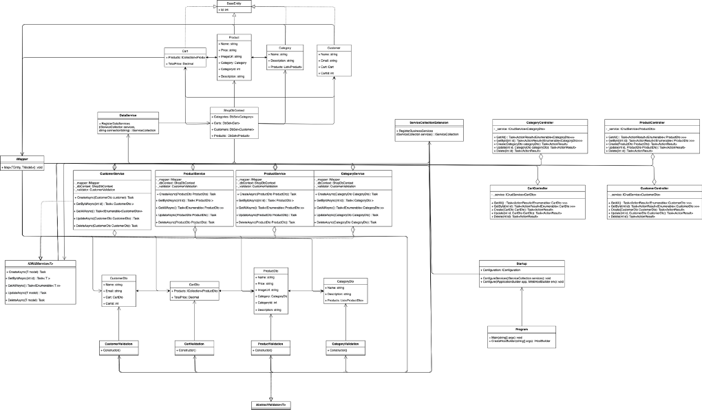
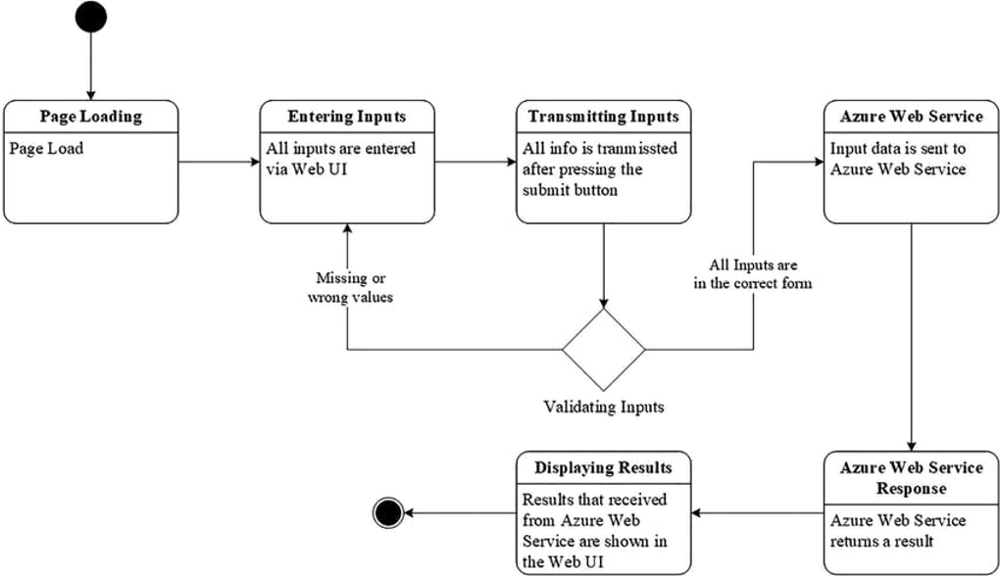
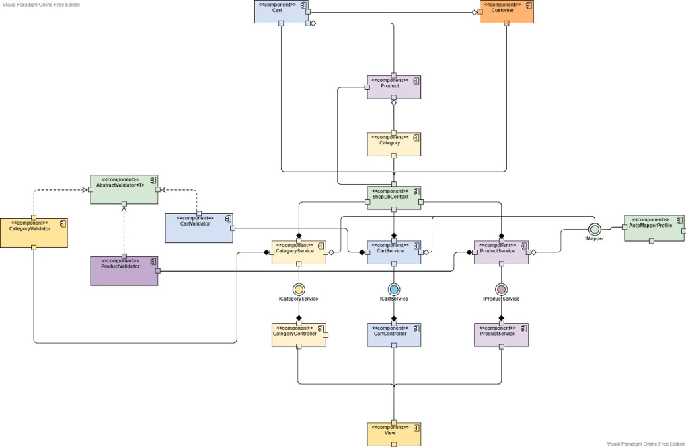

Тема: ПІДКЛЮЧЕННЯ БАЗИ ДАННИХ ТА ПІДГОТОВКА ДО ТЕСТУВАННЯ ЗА ДОПОМОГОЮ ENTITY FRAMEWORK CORE INMEMORY DATABASE
Мета: Здійснити створення імітатора бази даних за допомогою Entity Framework Core Inmemory Database
- Постановка задачі:
- 1. Створити імітатор бази даних за допомогою Entity Framework Core Inmemory Database для тестування.
- 2. Реалізувати методи сховища даних використовуючи Entity Framework Core.
Наведемо повну діаграму класів нашого застосунку
Наведемо діаграму варіантів використання нашого застосунку

Наведемо діаграму станів нашого застосунку
Наведемо діаграму послідовності нашого застосунку

Наведемо діаграму компонентів нашого застосунку
Використання технологіі Entity Framework Core
Entity Framework Core (EF Core) являє собою об'єктно-орієнтовану, легковажну і расширяемую технологію від компанії Microsoft для доступу до даних. EF Core є ORM-інструментом (object-relational mapping - відображення даних на реальні об'єкти). Тобто EF Core дозволяє працювати базами даних, але є більш високий рівень абстракції: EF Core дозволяє абстрагуватися від самої бази даних і її таблиць і працювати з даними незалежно від типу сховища. Якщо на фізичному рівні ми оперуємо таблицями, індексами, первинними і зовнішніми ключами, але на концептуальному рівні, який нам пропонує Entity Framework, ми вже працюємо з об'єктами. Entity Framework Core підтримує безліч різних систем баз даних. Таким чином, ми можемо через EF Core працювати з будь-якої СУБД, якщо для неї є потрібний провайдер.
Також варто відзначити, що EF Core надає універсальний API для роботи з даними. І якщо, наприклад, ми вирішимо змінити цільову СУБД, то основні зміни в проекті будуть стосуватися насамперед конфігурації і настройки підключення до відповідних провайдерам. А код, який безпосередньо працює з даними, отримує дані, додає їх в БД і т.д., залишиться колишнім. Центральної концепцією Entity Framework є поняття сутності або entity. Сутність визначає набір даних, які пов'язані з певним об'єктом. Тому дана технологія передбачає роботу не з таблицями, а з об'єктами і їх колекціями. Відмінною рисою Entity Framework Core, як технології ORM, є використання запитів LINQ для вибірки даних з БД. За допомогою LINQ ми можемо створювати різні запити на вибірку об'єктів, в тому числі пов'язаних різними асоціативними зв'язками. А Entity Framework при виконання запиту транслює вираження LINQ в вирази, зрозумілі для конкретної СУБД (як правило, в вирази SQL).
Використання імітатору бази даних за допомогою Entity Framework Core Inmemory Database для тестування.
Резидентна база даних (англ. In-memory database, IMDB) - база даних, що розміщується в оперативній памяті. Резідентние СУБД за рахунок оптимізацій, можливих в умовах зберігання і обробки в байтоадресуемой оперативної пам'яті, забезпечують кращу швидкодію, ніж СУБД, що працюють з базами даних на пристроях постійного зберігання, як правило, з блочною організацією, і підключаються по шинним або мережних інтерфейсів. При цьому розмір резидентної бази даних обмежений ємністю оперативної пам'яті вузла. Для ряду резидентних СУБД реалізуються техніки реплікації і сегментування (англ. Sharding), що дозволяють працювати з єдиною резидентної базою даних на декількох вузлах. Оскільки оперативна пам'ять енергозалежна, то використовується запис з попередніми журналированием на енергонезалежному пристрої для забезпечення цілісності бази даних при раптової перезавантаження, тобто, робота з резидентної базою не виключає залежності від продуктивності підсистеми вводу-виводу (хоча і знижує її).
Файлова структура проекту


Програмний код з використанням технологіі Entity Framework Core
Для того щоб відокремити шар даних та шар бізнес-логіки, на верхніх шарах використовується бізнес-моделі замість дата-сутностей:
За поєднання сутностей з дата-шару та бізнес-шару відповідає класи AutoMapperProfile у Business.Implementation:
Програмний код імітатору бази даних за допомогою Entity Framework Core Inmemory Database
Код классу Program

Код классу StartUp


Папка з проектом
Завантажити папку з проектомЗапуск ехе-файла
Завантажити програмуВисновки
В цій лабораторній роботі ми здійснили створення імітатора бази даних за допомогою Entity Framework Core Inmemory Database, також доповнили програмну реалізацію методів сховища даних використовуючи Entity Framework Core та підготували програму до тестування, шляхом написання тестів.